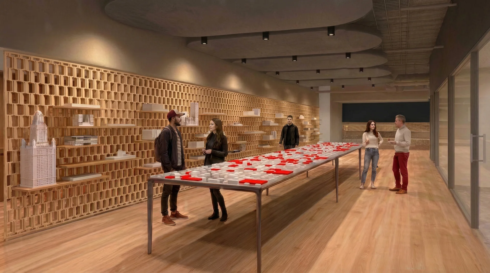
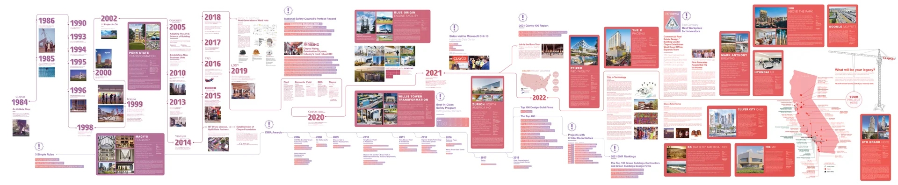

THE CLARK COLLECTION
VISIONTAKES FORM.
200+ works. A world of perspectives.
A DIFFERENT PERSPECTIVE
Art changeshow we see.
What if our spaces could do the same?
BOB’S COLLECTION
Many voices.
Shared curiosity.
A collection that invites us to look again.
RUSSELL BURNS BUILDING
Now imaginestepping inside.
Three spaces. One connected experience.
FIRST FLOOR / RBB
Three spaces.
One experience.
01 / THE EXPERIENCE CENTER
A new way
to encounter
the work.
Gather around the models.
Or walk above them.

01 / THE EXPERIENCE CENTER
Curiosity,
made physical.
Cinematic concept interpretation
02 / THE PRE-FUNCTION GALLERY
A passage
becomes
a destination.
A place to pause.
A reason to look closer.

02 / THE PRE-FUNCTION GALLERY
Pause.
Look closer.
Cinematic concept interpretation
03 / THE TIMELINE CORRIDOR
Our story
becomes
a place.
Physical models.
Moving images. Shared history.

03 / THE TIMELINE CORRIDOR
A story
you can
walk through.
Cinematic concept interpretation
FROM ONE OFFICE TO THE NEXT
A shared story,
still unfolding.

Los Angeles office / existing company timeline
THE NEXT CHAPTER
Make roomfor possibility.
A permanent home. An evolving exhibition.
Art, seminal projects, and the act of making.